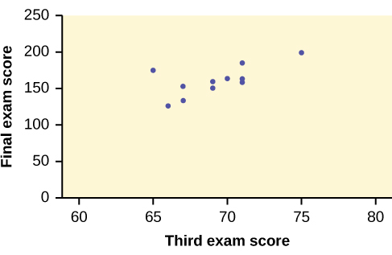
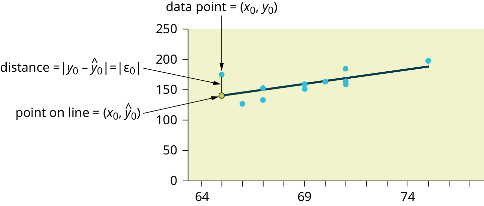
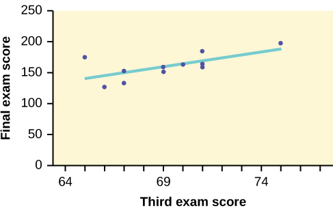

26 M9U: Linear Regression
This chapter draws on material from Introductory Statistics by OpenStax, licensed under CC BY 4.0.
Changes to the source material include light editing, adding new material, deleting original material, combining material, rearranging material, and adding first-person language from current author.
The resulting content is licensed under CC BY-NC-SA 4.0.
26.1 Introduction
Professionals often want to know how two or more numeric variables are related. For example, is there a relationship between the grade on the second data science exam a student takes and the grade on the final exam? If there is a relationship, what is the relationship and how strong is it?
In another example, your income may be influenced by your education, your profession, your years of experience, and your ability. The amount you pay a repair person for labor is often determined by an initial amount plus an hourly fee.
The type of data described in these examples is bivariate data—“bi” for two variables. In reality, data scientists tend to use multivariate data, meaning many variables.
In this reading, you will be studying the simplest form of regression, “linear regression” with one explanatory variable (x). This involves data that fits a line in two dimensions. You will also study correlation, which measures how strong the relationship is.
26.2 Linear Equations
Linear regression for two variables is based on a linear equation with one explanatory variable. The equation has the form \(y = a + bx\)
The graph of a linear equation of the form \(y = a + bx\) is a straight line. Any line that is not vertical can be described by this equation. If all of this reminds you of algebra, it should!

That said, in statistics, we assign specific meanings to these different terms that you might not have covered in algebra. For example, the variable \(x\) is the explanatory (or independent or predictable) variable, and \(y\) is the outcome (or dependent) variable. This was just as true in algebra as it is in this class, but that isn’t always specified in algebra—by contrast, it’s very important to understand that for data science. Similarly, in algebra, you may have referred to \(a\) as the \(y\)-intercept and \(b\) as the slope. These both make sense: \(a\) is the value at which the line crosses (intercepts) the \(y\)-axis, and \(b\) describes how steep the line is. In a statistical analysis, however, those mean specific things, which are key to our interpretation of a regression analysis.
Let’s talk about \(a\) first, which you may see described as just the “intercept” or even as a “constant.” In short, it’s the value of the outcome variable when the explanatory variable is at 0. Sometimes, this can be really helpful! For example, if the outcome variable is a measure of sickness, and the explanatory variable is a dosage of medicine, the intercept gives us an estimate for how sick someone would be without any medicine at all (these are sloppy examples, of course—they get the point across, but we’d need a lot more detail to really interpret that relationship). Other times, though, the intercept is a bit nonsensical. If we wanted to measure the relationship between height and weight, we could set height as our explanatory variable and weight as our outcome variable. R will dutifully spit out an intercept value for us, which would represent the weight we would expect for someone with a height of 0; since that’s impossible, that number is actually pretty useless.
Even more important is how we think of \(b\); after all, the slope of the line is really just a visual representation of something in our data. In data science, we refer to \(b\) as a coefficient, and it represents the strength of the relationship between the explanatory and outcome variables. In very specific terms, \(b\) represents the change in the outcome variable for a 1-unit increase of the explanatory variable. A positive coefficient suggest a positive relationship (demonstrated in a plot by a positive slope): More of the explanatory variable leads to more of the outcome variable. A negative coefficient suggests a negative relationship (demonstrated in a plot by a negative slope): More of the explanatory variable leads to less of the outcome variable.
26.3 Linear Relationships and Scatterplots
We’ve already touched on scatterplots as a visualization technique for examining the relationship between two variables. The connection between a linear relationship and a scatterplot visualization is pretty intuitive.
For example, a scatterplot shows the direction of a relationship between the variables. A clear direction happens when there is either:
- High values of one variable occurring with high values of the other variable or low values of one variable occurring with low values of the other variable.
- High values of one variable occurring with low values of the other variable.
You can determine the strength of the relationship by looking at the scatterplot and seeing how close the points are to a line—the kind that we might express with the equation above. However, not all lines are created equal! In particular, consider a scatter plot where all the points fall on a horizontal line providing a “perfect fit.” This is actually evidence of no relationship. This makes sense if you consider that the slope of such a line is 0, which means that the coefficient is 0 and, therefore, that the explanatory variable has no effect on the outcome variable.
When you look at a scatterplot, you want to notice the overall pattern and any deviations from the pattern. In this chapter, we are interested in scatter plots that show a linear pattern. Linear patterns are quite common. The linear relationship is strong if the points are close to a straight line, except in the case of a horizontal line, which indicates there is no relationship.
However, the connection between the scatterplot visualization and a linear relationship actually goes deeper than just the intuitive connection between them. Linear regression uses geometric distances between points on a two-dimensional plane to calculate the equation that best defines the relationship between these variables.
26.4 The Regression Equation
Data rarely fit a straight line exactly—this is one of the reasons that we need to be humble about our data science work! Usually, you must be satisfied with rough predictions. Typically, you have a set of data whose scatter plot appears to “fit” a straight line. This is called a Line of Best Fit or Least-Squares Line.
Imagine that a random sample of 11 data science students produced the following data, where \(x\) is the third exam score out of 80, and \(y\) is the final exam score out of 200. Can you predict the final exam score of a random student if you know the third exam score? The third exam score, \(x\), is the explanatory variable and the final exam score, \(y\), is the outcome variable. Let’s consider a scatterplot that visually represents this hypothetical dataset:
We could use a line that represents a linear equation to describe the relationship between these variables. Just eyeballing it, most of you would probably come up with a line with a positive slope, which suggests a positive relationship between these variables. That’s not surprising at all. However, even if everyone were careful, each of you would draw different lines. To come up with an consistent best fit line, we can use what is called a least-squares regression line.
Consider the following diagram. Each point of data is of the the form (\(x\), \(y\)) and each point of the line of best fit using least-squares linear regression has the form (x, ŷ).

The \(ŷ\) is read “y hat” and is the estimated value of y. It is the value of \(y\) obtained using the regression line. It is not generally equal to \(y\) from data.
The term \(y_{0} – ŷ_{0} = ε_{0}\) is called the “error” or residual. It is not an error in the sense of a mistake. The absolute value of a residual measures the vertical distance between the actual value of \(y\) and the estimated value of \(y\). In other words, it measures the vertical distance between the actual data point and the predicted point on the line.
If the observed data point lies above the line, the residual is positive, and the line underestimates the actual data value for \(y\). If the observed data point lies below the line, the residual is negative, and the line overestimates that actual data value for \(y\).
You can calculate the residuals (or errors) for each data point. Then, if you square them (so that negative residuals don’t cancel out positive residuals) and add them together, you get a Sum of Squared Errors (SSE), a measure of the amount of error for particular points and a particular line.
Using calculus, you can determine the values of \(a\) and \(b\) that make the SSE a minimum. When you make the SSE a minimum, you have determined the points that are on the line of best fit—that is, you’ve found the line for which there’s the least amount of error.
26.5 Least Squares Criteria for Best Fit
The process of fitting the best-fit line is called linear regression. The idea behind finding the best-fit line is based on the assumption that the data are scattered about a straight line. The criteria for the best fit line is that the sum of the squared errors (SSE) is minimized, that is, made as small as possible. Any other line you might choose would have a higher SSE than the best fit line. This best fit line is called the least-squares regression line.
The graph of the line of best fit for the third-exam/final-exam example is as follows:

The least squares regression line (best-fit line) for the third-exam/final-exam example has the equation: \(y = -173.51 + 4.83 x\)
Looping back to our discussion of linear equations, we can interpret this! Let’s start with the overall interpretation and then break it down. Our regression model estimates that a student’s final exam score (out of \(200\)) ought to equal \(-173.51\) plus \(4.83\) for every point (out of 80) they scored on the third exam for the class.
Our intercept here is kind of useless. It predicts that a student who scored a 0 on the third exam will score a \(-173.51/200\) on the final exam, and I can promise that professors are (usually) not so cruel as to give negative points for final exams. This number makes sense mathematically but not conceptually.
However, our coefficient here is really helpful: For every additional point that a student scores on the third exam, we can expect them to score an additional 4.83 points on the final exam. That’s not a perfect prediction (linear regression never is), but it’s helpful to know.
26.6 Correlation Coefficients
Besides looking at the scatter plot and seeing that a line seems reasonable, how can you tell if the line is a good predictor? We can calculate a correlation coefficient as another indicator (besides the scatterplot) of the strength of the relationship between x and y.
Before moving on, a few words about correlations. First, even though data scientists generally have the goal of establishing causal relationships between variables, doing so is actually quite difficult. A common saying in statistics and data science is that correlation isn’t causation. Two variables may be correlated without having any kind of causal relationship between them. Second, in popular language, “correlation” is used to indicate any kind of relationship between two phenomena. However, in statistics and data science, correlation refers specifically to the kind of relationship suggested by a correlation analysis. If you’re reporting on the results of a regression, for example, it would be inappropriate to talk about variables being correlated, because that’s not the kind of analysis that you’re doing.
The correlation coefficient, \(r\), developed by Karl Pearson in the early 1900s, is numerical and provides a measure of strength and direction of the linear association between the explanatory variable \(x\) and the outcome variable \(y\). For the moment, we’re not going to worry about how the correlation coefficient is calculated. However, If you suspect a linear relationship between \(x\) and \(y\), then \(r\) can measure how strong the linear relationship is.
What the VALUE of \(r\) tells us:
- The value of \(r\) is always between \(–1\) and \(+1\): \(–1 ≤ r ≤ 1\).
- The size of the correlation \(r\) indicates the strength of the linear relationship between x and y. Values of \(r\) close to –1 or to +1 indicate a stronger linear relationship between \(x\) and \(y\).
- If \(r = 0\) there is likely no linear correlation. It is important to view the scatterplot, however, because data that exhibit a curved or horizontal pattern may have a correlation of \(0\).
- If \(r = 1\), there is perfect positive correlation. If \(r = –1\), there is perfect negative correlation. In both these cases, all of the original data points lie on a straight line. Of course,in the real world, this will not generally happen.
What the SIGN of r tells us:
- A positive value of \(r\) means that when \(x\) increases, \(y\) tends to increase and when \(x\) decreases, \(y\) tends to decrease (positive correlation).
- A negative value of \(r\) means that when \(x\) increases, \(y\) tends to decrease and when \(x\) decreases, \(y\) tends to increase (negative correlation).
- The sign of \(r\) is the same as the sign of the slope, \(b\), of the best-fit line.
In addition to the correlation coefficient itself, we can consider the variable \(r^2\). This is called the coefficient of determination and is the square of the correlation coefficient. However, it is usually stated as a percent, rather than in decimal form. \(r^2\) is always calculated as part of a regression analysis because it tells us some things about the data:
- When \(r^2\) is expressed as a percent, it represents the percent of variation in the dependent (predicted) variable y that can be explained by variation in the independent (explanatory) variable x using the regression (best-fit) line.
- When \(1 - r^2\) is expressed as a percentage, it represents the percent of variation in \(y\) that is NOT explained by variation in \(x\) using the regression line. This can be seen as the scattering of the observed data points about the regression line.
So, for example, the \(r^2\) value for our third exam/final exam regression from earlier is \(0.4397\). This tells us that approximately 44% (\(0.4397\) is approximately \(0.44\), which is equivalent to 44%) of the variation in the final-exam grades can be explained by the variations in the grade on the third exam. However, there is still approximately 56% of the variation in final exam grades (\(1 - 0.44 = 0.56\), which is equivalent to 56%) that isn’t explained by our model. Over half of the variation between students’ final exam scores can be attributed to factors other than their performance on the third exam.
26.7 Conclusion
Regression and correlation are the main kinds of statistical analysis that we’ll be doing this semester, so it’s important that we get the mechanics down. If reading over all of this felt like a lot, we’re actually going to cover it all again with our application activity; the concepts that we covered in this understanding reading are important, but as with most things data science, I strongly feel that actually doing something helps more than reading it. Besides, the application take on all of this will tackle it from a different angle, so a couple of different perspectives ought to be helpful in helping these ideas really sink in.